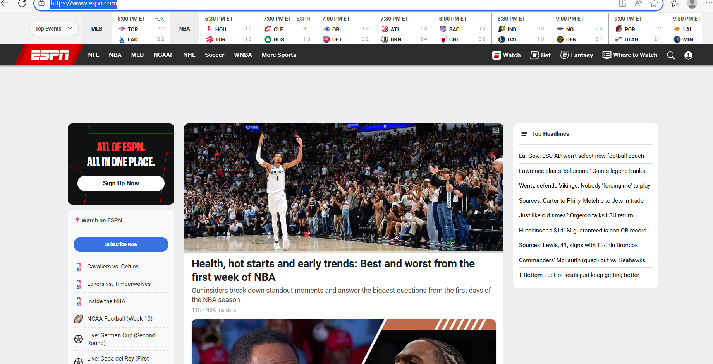

Website Information
- Website Name:
- ESPN
- Website URL:
- https://www.espn.com/
- Screenshot:
- 
Target Audience
The primary target of the website is sport fans of all kinds like sports that are live or news in sport world. I use it to see which teams are going against which and so i can see it when it's live and currently going on.
Site Organization
Just based on the screenshot alone, at the top you can see the live sport events and on the right side are the top headlines like the top news and on the left are quick links to which sport you want news on.
CRAP Design Principles Used
- Contrast: [-Contrast: ESPN uses strong contrast by displaying headlines and menus in bold colors against dark or white backgrounds, making important information easy to see and read.]
Accessibility Audit Score
Audit Score: 35/100
Site Effectiveness
The site effectively helps users find information about live sports events, scores, and news articles. For example, the prominent display of live events at the top of the homepage allows users to quickly see what's currently happening in the sports world.
Site Efficiency
Tasks are generally straightforward, with clear navigation to different sports categories and news sections. However, the abundance of information can sometimes make it challenging to find specific content quickly.
Engagement
The site is visually appealing and uses a color scheme that reflects the excitement of sports. since sports are released on real time many would use it and it is fun for sport fans to see something happening online in real time.